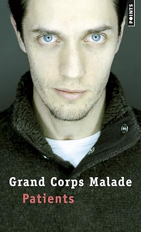

Mes loisirs
🎈 - Mes activités extra-scolaires
Hors du lycée je ne partique aucun sport
En revanche, chez moi je m'entraine à développer des outils informatiques👨💻,
comme Ruty  (un projet en cours), je code aussi des jeux,
(un projet en cours), je code aussi des jeux,
et je m'instruit beaucoup sur les réseaux internets.
🎥 - Mon film préféré
C'est difficile pour moi de choisir un film préféré...
Disons plutôt que j'adore la licence MARVEL
Chaque film est exeptionel, sauf leurs dernières sorties qui
sont moins bien travaillés à mon goût.
📖 - Mon livre préféré
J'ai beau ne pas avoir beaucoup lu, j'ai quand même été contraint
à lire les livres imposées par la matière française. J'en ai retenu un seul
(que j'ai lu en troisème) il s'agit de Patients de Grand Corps Malade.
C'est une autobiographie de lui même où il raconte son séjour à l'hopital,
il est plutôt marrant et intéressant.
